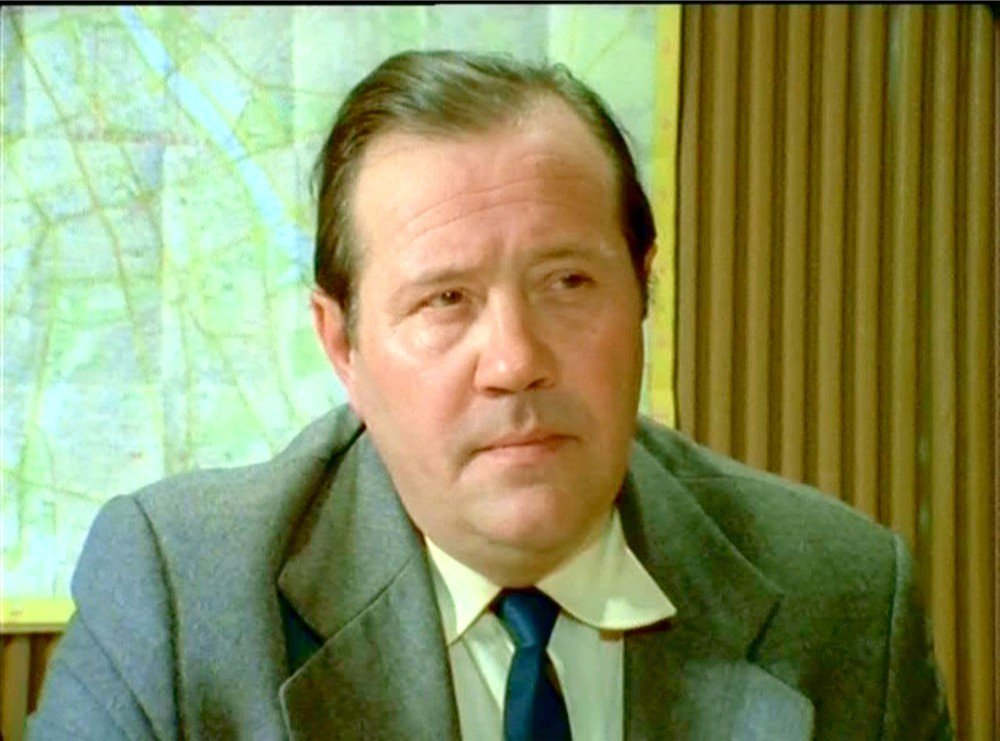

Porucznik Zubek
Zdzisław Kozień (ur. 4 grudnia 1924 w Krakowie, zm. 25 marca 1998 w Rzeszowie) – polski aktor teatralny i filmowy.
Pracę artystyczną rozpoczął w czasach okupacji jako aktor-amator. W latach 1948-1952 występował w Teatrze Kolejarza w Krakowie. Od 1953 związany z Teatrem im. Wandy Siemaszkowej w Rzeszowie. Stworzył tu wiele wybitnych kreacji aktorskich, m.in. Cześnika w „Zemście”, Majora w „Fantazym”, Wojewody w „Mazepie” czy Czepca w „Weselu”. W 1955 zdał aktorski egzamin eksternistyczny. W latach 1972-1982 pracował w Teatrze Polskim i Współczesnym we Wrocławiu. Od 1983 ponownie występował w Rzeszowie. Wystąpił w wielu filmach fabularnych (m.in. Człowiek z marmuru jako ojciec Agnieszki) oraz serialach telewizyjnych (m. in. Królowa Bona jako Zygmunt I Stary). Widzowie zapamiętali jego rolę w popularnym serialu telewizyjnym 07 zgłoś się, gdzie zagrał porucznika Antoniego Zubka. Odznaczony m.in. Krzyżem Kawalerskim Orderu Odrodzenia Polski. Dwukrotnie żonaty. Zmarł w wyniku choroby nowotworowej[1]. Został pochowany na Cmentarzu Wilkowyja w Rzeszowie.
